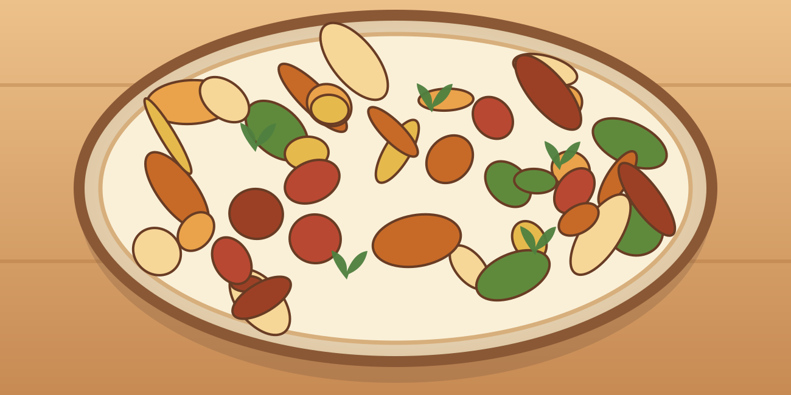

Poêlée de bœuf aux pommes de terre
Une grosse portion maison, simple à préparer, avec des légumes et des protéines.
⏱ 30 min🍽 1 grosse portion💰 ≈ 4–5 €💪 ≈ 48 g protéines≈ 780 kcal
Ingrédients
- 180 g de bœuf haché 5 %
- 350 g de pommes de terre
- 100 g de carotte
- 80 g de petits pois
- 100 g de sauce tomate
- 60 g d’oignon
- 5 ml d’huile
- Paprika, poivre
Préparation
- Couper pommes de terre en dés de 1 cm ; les cuire 5 min dans l’eau bouillante puis égoutter.
- Les faire dorer à la poêle avec l’huile 8 à 10 min.
- Ajouter oignon et carotte en petits dés, cuire 3 min.
- Ajouter le bœuf haché, émietter et cuire 7 à 9 min jusqu’à cuisson complète.
- Ajouter petits pois et sauce tomate ; réchauffer 3 min.
Conservation et réchauffage
Conserver 2 jours au froid, réchauffer en remuant jusqu’à bien chaud.
Nutrition et prix indicatifs : à recalculer selon les marques et quantités dans MyFitnessPal. Les sauces mentionnées sont sans poisson : vérifier les étiquettes.